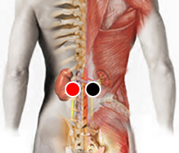

Gastritis
Pares
lumbar 2 - lumbar 2
cóccix - cóccix
ano - lengua

Gastritis y úlcera gástrica:
Trastorno digestivo causado por la inflamación de la mucosa gástrica. La gástritis puede aparecer en forma repentina causando diversos síntomas o puede volverse una afección crónica. Cuando la persona padece gastritis crónica, con el tiempo puede surgir una úlcera gástrica, que es un daño (herida) en las paredes del estómago, lo cual también causa sangrado continuo y pérdida de hierro (anemia).
Síntomas:
La Gastritis puede deberse al consumo de irritantes como: alcohol, grasas, condimentos, picante, café, medicamentos (analgésicos, antiinflamatorios...). También pueden incidir factores emocionales como constantes enojos, estrés que general mayor cantidad de bilis. No menos importantes son los agentes patógenos que proliferan una vez que el medio es propicio.
De acuerdo al Dr. Isaac Goiz Durán los principales pares relacionados con esta afección son: Helicobacter Pilori, Estafilococo a (-), Estafilococo a. (+), Estreptococo B, Klepsiella Pneumoniae, Clostridium Perfringens, Disfunción del estómago, Sarampión, Enterobacter Pneumoniae, Orthohepadnavirus, entre otros.